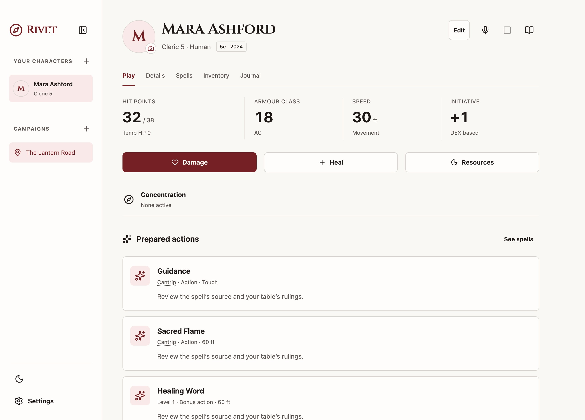
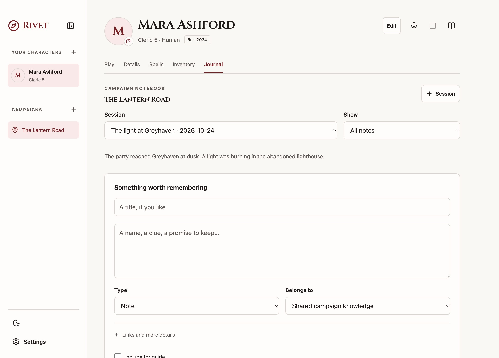
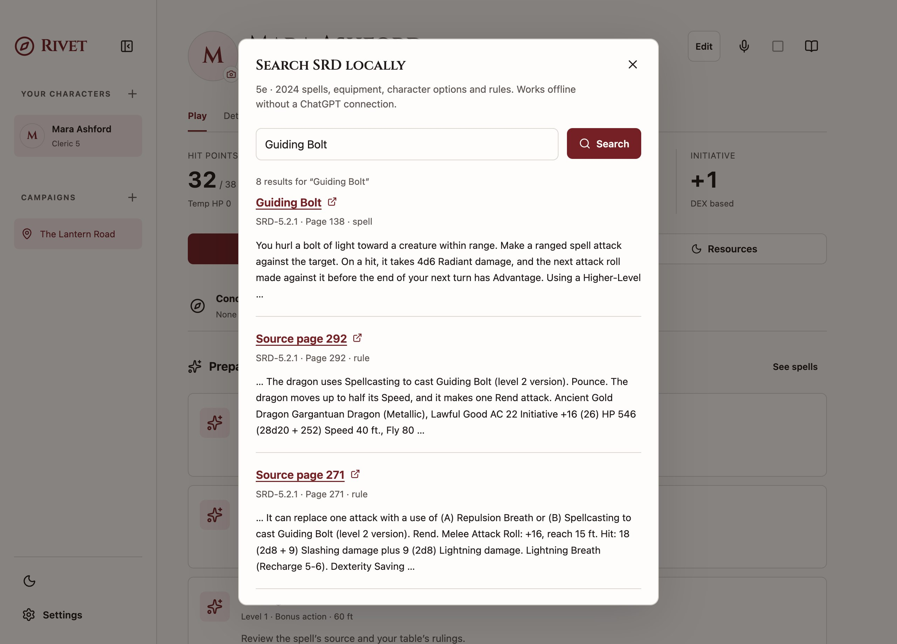

The whole character
HP, spell slots, prepared spells, equipment, coins, and rest resources. Track changes and undo them when you need to.
A free, open-source D&D companion
Keep your character, campaign notes, and rules together in a macOS app that saves everything on your Mac.
v0.1.0 · Build from source · No signed installer yet

At the table. Between sessions.
Less hunting through tabs. More of your game in one place, with your own files and no Rivet account to create.
HP, spell slots, prepared spells, equipment, coins, and rest resources. Track changes and undo them when you need to.
Keep people, places, quests, and rulings linked to a campaign and its sessions. Carry the useful details into the next game.
Search the bundled SRDs by edition. Read the source locally, even when the table’s Wi-Fi has other plans.
The innkeeper’s promise. The clue under the jetty. The quest you meant to finish. Give them a place that survives the end of the session.
Keep notes for a character or a whole campaign, link related entries, and choose which notes to include for the guide.


Spells, equipment, character options, and the underlying rules are searchable on your Mac. Every result keeps its edition and source.
Rivet is still a work in progress. It won’t build or level a character automatically, and it doesn’t replace your DM’s rulings.
What’s covered, and what’s still manualAn optional companion
Oracle connects to your ChatGPT account to explain rules, look up your edition’s SRD, and help with character changes. Routine edits have an Undo receipt; other changes ask for review.
Session capture can also transcribe speech locally and use ChatGPT to turn new transcript text into editable recaps. Audio is discarded, not saved or uploaded.
The app is free. Oracle and recaps need internet and eligible ChatGPT plan access, subject to OpenAI’s availability and usage limits. The model runs online. Sheets, notes, and rules search work without it.
Get Rivet · macOS
Rivet is available as source code. There’s no ready-to-install download, Apple Developer ID signature, or notarization yet.
Build it on your Mac and the packaging script will apply and verify a local ad-hoc signature for you. No Apple Developer membership is needed.
Download source ZIP Full macOS build & signing guideNeeds macOS, Node.js 22.17+, pnpm 10.34.7, and Xcode Command Line Tools. Apple Silicon is locally verified. Intel builds need testing.
Install Node.js, then run these commands in Terminal. Finish the Command Line Tools installer before continuing.
xcode-select --install
npm install --global pnpm@10.34.7Or download the source ZIP above, unzip it, and open Terminal in that folder.
git clone https://github.com/nk2580/rivet.git
cd rivet
pnpm install --frozen-lockfile
pnpm package:desktopThe build signs the app locally. Launch it from the release folder:
open "release/Rivet-darwin-$(node -p process.arch)/Rivet.app"You can then copy Rivet.app to Applications. See the build guide if macOS blocks the first launch.
A few practical things
Yes. The application code is open source under the MIT license. You can use it, change it, and build it yourself. Bundled rules and third-party components retain their own licenses. Optional ChatGPT features use your account’s eligible plan access and limits.
Characters, notes, and chat history live in a local SQLite database on your Mac. Rivet has JSON workspace export and import, so keep a backup somewhere safe. Oracle sends the context needed for a request to OpenAI; selected notes and session transcript text may be included when you use those features.
Yes. Character sheets, campaign notes, and local SRD search work without signing in. Connect ChatGPT only if you want Oracle or generated session recaps. Speech recognition works locally after downloading the English model.
No. It tracks character state and supports a growing set of rules and actions across 5e 2014, 5e 2024, and 3.5e. Full character creation, progression, and some edition-specific mechanics remain manual. There’s no dice roller. Read the coverage notes before using it at your table.
The current release focus is macOS, with local build verification on Apple Silicon. Some platform support exists in the source, but Windows, Linux, and Intel macOS are not yet verified release targets. Reports and contributions from those platforms are welcome.
Built in the open
Found a rough edge? Have a house rule worth supporting? Open an issue, improve the docs, or send a pull request.